Navigate your codebase
Roles & Responsibilities
For this project, I performed problem analysis, user interaction flow, wireframes, interactive designs, and MVP implementation. The CTO helped me cut scope for the MVP and implemented some follow-up changes.
Trouble getting around the codebase
Dark lays its constructs (code and data schemas) in floating boxes. There is no order to them. Developers spend their time panning, dragging, jumping around their project space instead of coding. Why do they do that?
1. They do so to verify DB schemas
Developers need to drag databases close to code referring to it. Because DB::set requires the data inserted to match the schema exactly.
When a function has code referring to a DB, the experience is even worse! Since functions are in their own separate space, developers must to go back to the main space to see the DB schema. They must either have fantastic short-term memory or take a screenshot of the DB double-check their code.
2. To read/write in functions
Developers can create functions, which will be accessible throughout their own project. But these functions are NOT accessible within the main space; they exist in their own little world. Nor are they accessible from the code that uses them. They can only be reached through the sidebar.
3. To understand workers
Workers are like async functions that appear in the main space. But that doesn't make using them any easier.
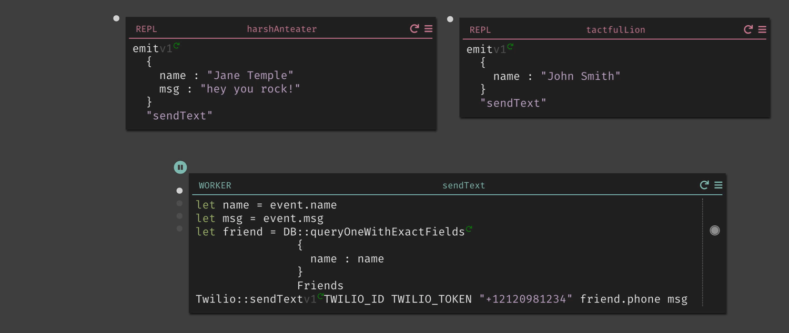They take only one argument event of type Any. The developer has to drag them near their code to determine its expected input, just like DBs. But unlike DBs, which have a set schema, the developer must read through the code to figure out what is the expected type and structure of the input.
How did we get here?
Problems we face today are created by people in the past with the best intentions
The founder's vision for Dark is to bring data into development. He would start off with "imagine a city, where you have boroughs and neighborhoods...". He wanted constructs in Dark to be laid out as if they are on a map. The value of Dark is it would show developers live (or cumulative) traffic as it flows through the codebase.
The floating boxes (of code and DBs) are one day suppose to have dots/lines between them to show live traffic. They will organize code for developers instead of having files. File systems, he theorized, are arbitrary ways of splitting code. They give developers more problems to worry about (such as dependency cycles) than solutions.
Let's think through the city analogy

If the endpoints and datastores are landmarks, then the path data takes are streets and highways.
The path of a single trace is a trip.
Over time we can construct a cumulative flow illustrating the popularity of certain paths. The developer will know which parts of the codebase to devote more resources.
Unfortunately, most of our developers don't have live traffic yet*
for the traffic feature to be useful. They find Dark such a frustrating experience they never finish their projects.
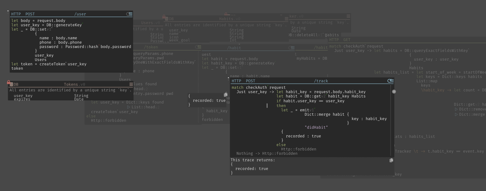They struggle to understand what is going on in their codebase because everything is too disorganized.
At the time of this project (early 2019). Now we have many developers with live traffic
First, we must pave the streets
How can we help developers understand their codebase? So they may write, debug, and edit code with ease?For this case study, we'll be using a simple habits tracker application.
You set a weekly goal for how many times you want to do the activity (ie: run 3 times a week). When you do the habit the app calls the API with POST /track. The API checks to see if you've reached your goal this week. If you have, you'll get a text with a cute meme. Otherwise, you'll just get a motivational quote instead.
City planning!
- In order to create a useful interface for writing & editing code, we must answer the following questions:
- What are all the possible paths a trace can take once an endpoint recieves the data?
- How do we show the navigation of the through these paths?
- What do information should be available for each construct type?
Let's consider one path
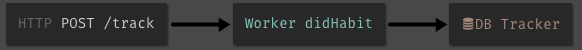POST /track gets hit it when you've completed a habit. Most of the execution is offloaded to a queue (the "didHabit" worker). The worker will add an entry to the Tracker DB, and send you a meme if you've met your weekly goal.
Adding points along the path
 |  |
We start off with POST /track, its code it references Habits DB with DB::get. And emits an event to "didHabit" worker. So we add them as references. References allow the developer to preview or go down the path in a program's control flow.
Going down the path
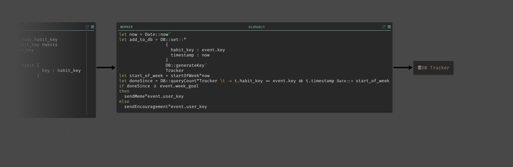 WithdidHabit worker in focus, the developer should still see most of POST /track. The fade out on the left side is for aesthetic balance on the slide. The actual mocks had no fade.
When the developer clicks into a reference, the screen now show all its contents and focus on it. Adding its own references to the right. In our navigation analogy, you have made your turn and now directions for the next steps are visible.
Are we there yet?
Have we mapped out all the paths we want to capture? When POST /track gets hit, most of its execution is offloaded to a queue (the "didHabit" worker). The worker will add an entry to the Tracker DB, and send you a meme if you've met your weekly goal.
| 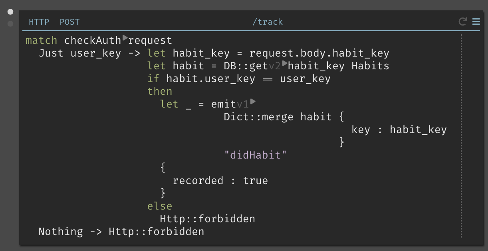 | 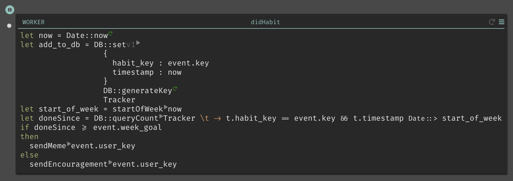 |
What is it that is missing?Send meme or encouragement!
... and how do we get there?
Looks like they are functions. And a problem our developers face is:
Functions are NOT accessible within the main space; they exist in their own little world. Nor are they accessible from the code that uses them. They can only be reached through the sidebar.
| 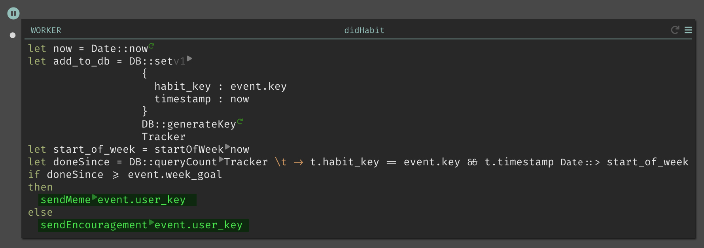 | 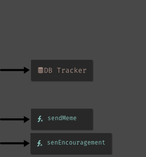 |
Let's references for functions!
Where else are there functions? Let's add those too!
| 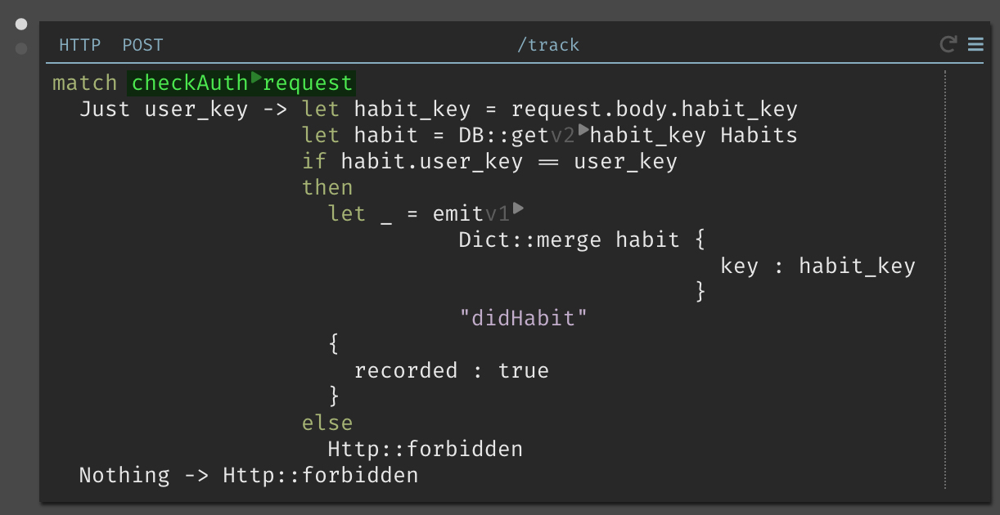 | 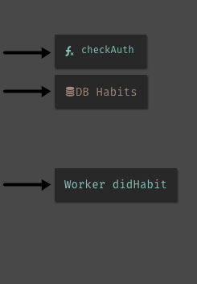 |
Now, when the developer clicks into a function's reference, they can see the code.
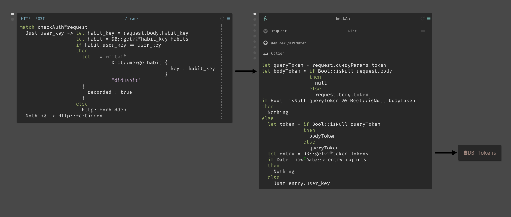How to represent landmarks?
So far references are just boxy links. How can we use the space to provide useful information to the developer?
When we look at rest stop signs in highways, they provide information on what's coming up ahead. Sign designers anticipate a driver's needs as they drive by. Do they need a bathroom break? More gas? A snack? What are our developer's needs?
Reach out @aliceaskwhy, if you want to share badly designed highway signs.
Developers drag DBs closer to their code to check schema.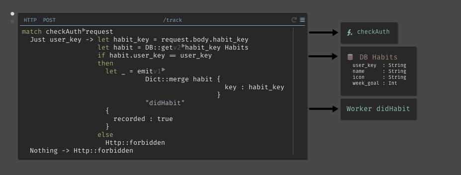
Let's put the schema into a DB reference, so they will no longer have to drag the DB over to validate schema.
Developers want to see what happens to their code when it passes through a function.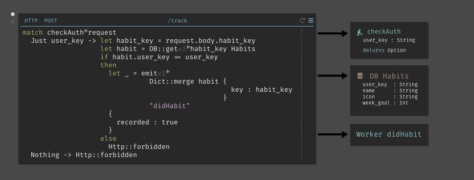
We can derive the return type from the code and show the function's input and output signature.
Developers want to know what a worker expects for its input (event : Any)
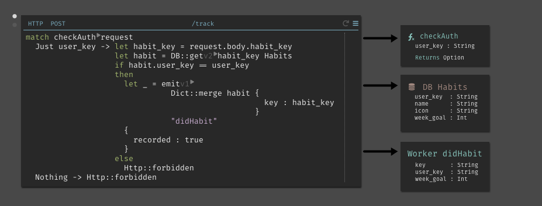
We can derive the expected input by analyzing the worker's code!
Designing our city
Let's bring some color consistency and typographic hierarchy.
| 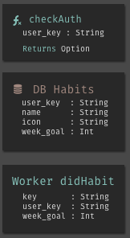 | 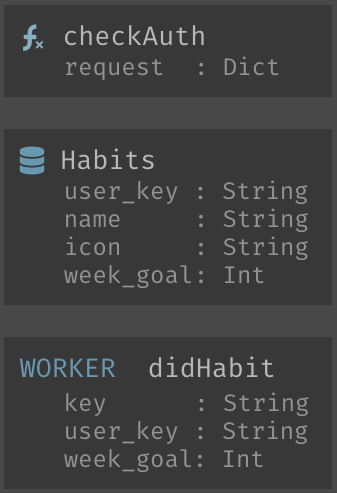 |
Now how should we arrange our references in relation to the code?
Considering constraints
Going down the path horizontally might not work. Live values are on the left!
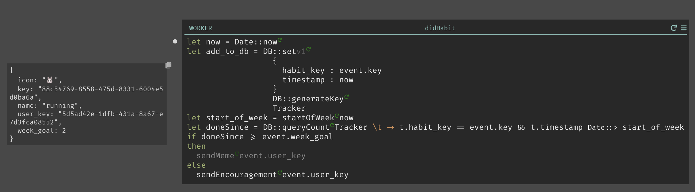Since they are a core value proposition of the product, we can't just move them without deeper consideration. And convincing the team we will have to move them may take months. I decided to save my energy.
For now let's draw all the references on the right side with incoming and outgoing arrows. We'll think more about their ideal placement later.
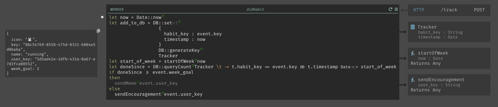It is more important to bring the value of references to developers sooner.
Putting it all together
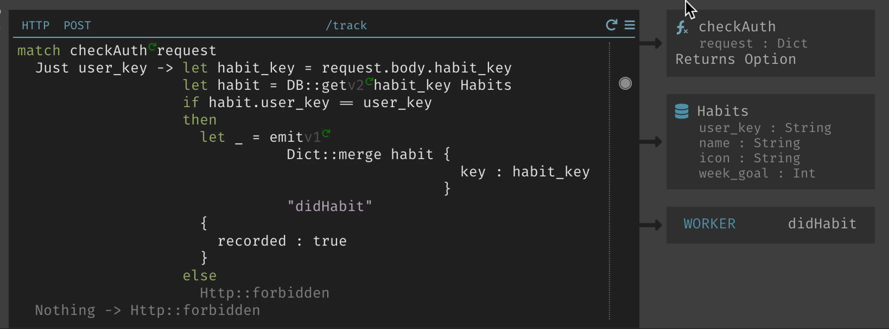 Hovering over references will highlight where they are used in the code.Making it real!
When it came time to build, we had to trim our requirements. And get an MVP out for developers to test and play with. So we had to cut scope.
- Only show references on the right for HTTP code blocks.
- Don't show a worker's event structure yet (because it involves complex program analysis)
- Don't derive the return types for functions, because functions will have static return types.
- Instead of expanding to see the code in workers and functions, just pan to them spot in the project space.
After scope cuts, this is our implemented solution
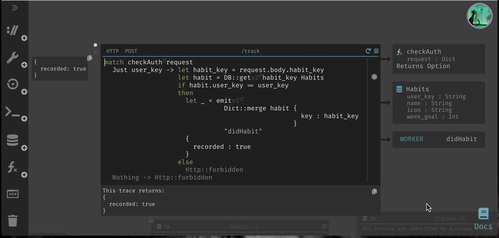Field test
Overall the feedback was positive. New developers pointed out it was one of the features they felt made Dark unique. Existing developers even discovered an unintended use case. They used it to depreciate functions and migrate DB schemas.
- But there were several things they didn't like:
- The (in/out) arrows are too subtle.
- Viewing a function's code in another space is still disruptive to workflow
- They want to be able to see caller and reference code side by side.
Revisions
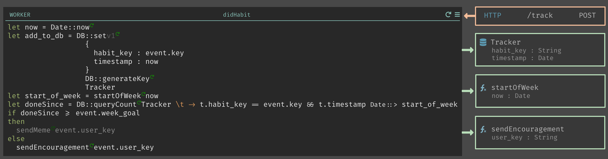 A simple fix can be to color the arrow and box differently for incoming and outgoing references.But the real cause of user confusion is because we threw everything to the right, because we didn't want incoming references to conflict with live values. Let's look at how we can solve this conflict.
Idea 1: Move it
Now that references have proven their worth, we might be able to move live values. And it will be easier to get everyone on board with the move.
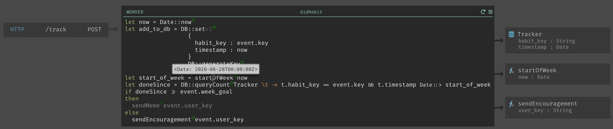We can move the live values into the code, and they would move above the cursor. They will appear in the line above. If the value is more than one line long, affordances can be added to expand and collapse it. But values moving around is obstructive to typing. And it covers the line above which you may need to see for context.
Idea 2: Show depending on user intentions
The scope of focus while reading live values is different than when they are looking at incoming references.
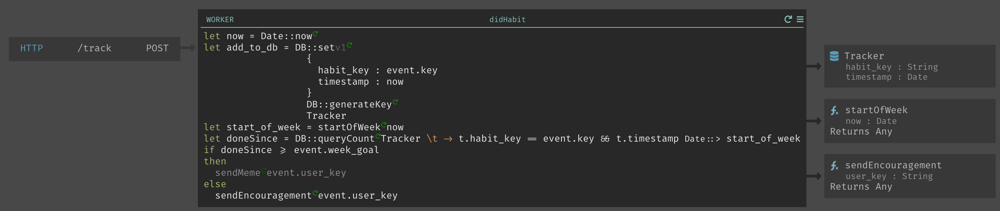A developer looks at incoming references to see its usage. The code (and consequently live values) can be a black box. We don't need to show live values in that case.
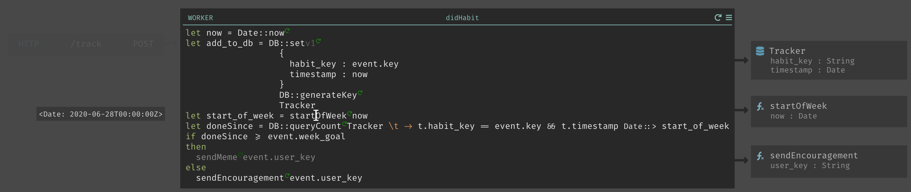When a developer edits code, they want to know what is happening to the data. We fade out the incoming references and show the live value then.
Retrospective
After the scope was cut, and we implemented references for workers and functions. But there was no plan to implement other cut features nor the revisions.
Without moving our incoming references back to the left and showing code of the caller and function side by side. The map/navigation analogy is broken.